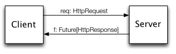

Finagle is Twitter’s RPC system. This blog post explains its motivations and core design tenets, the finagle README contains more detailed documentation. Finagle aims to make it easy to build robust clients and servers.
- REPL
- Futures: Sequential composition, Concurrent composition, Composition Example: Cached Rate Limit, Composition Example: Thumbnail Fetcher
- Service
- Client Example
- Server Example
- Filters
- Builders
- Don’t Block (unless you do it the right way)
Finagle-Friendly REPL
We’re about to discuss some code that’s not part of standard Scala. If you like to use the REPL to learn, you might wonder how to get a Scala REPL that knows about Twitter’s Finagle and things it depends on.
You want the Finagle source code.
If you have the Finagle source code in a directory named finagle, you can get a console via
$ cd finagle $ ./sbt "project finagle-http" console ...build output... scala>
Futures
Finagle uses com.twitter.util.Future1 to encode delayed operations. A Future is a handle for a value not yet available. Finagle uses Futures as return values for its asynchronous APIs. A synchronous API waits for a result before returning; an asynchronous API does not. For example, an HTTP request to some service on the internet might not return a value for half a second. You don’t want your program’s execution to block for half a second waiting. “Slow” APIs can return a Future right away and then “fill in” its value when it resolves.
val myFuture = MySlowService(request) // returns right away ...do other things... val serviceResult = myFuture.get() // blocks until service "fills in" myFuture
In practice, you won’t write code that sends a request and then calls myFuture.get a few statements later. A Future has methods to register callbacks to invoke when the value becomes available.
If you’ve used other asynchronous APIs, you perhaps cringed when you saw the word “callbacks” just now. You might associate them with illegible code flows, functions hiding far from where they’re invoked. But Futures can take advantage of Scala’s first-class functions to present a more-readable code flow. You can define a simpler handler function in the place where it’s invoked.
For example to, write code that dispatches a request and then “handles” the response, you can keep the code together:
val future = dispatch(req) // returns immediately, but future is "empty"
future onSuccess { reply => // when the future gets "filled", use its value
println(reply)
}
You can play with Futures in the REPL. This is a bad way to learn how you will use them in real code, but can help with understanding the API. When you use the REPL, Promise is a handy class. It’s a concrete subclass of the abstract Future class. You can use it to create a Future that has no value yet.
scala> import com.twitter.util.{Future,Promise}
import com.twitter.util.{Future, Promise}
scala> val f6 = Future.value(6) // create already-resolved future
f6: com.twitter.util.Future[Int] = com.twitter.util.ConstFuture@c63a8af
scala> f6.get()
res0: Int = 6
scala> val fex = Future.exception(new Exception) // create resolved sad future
fex: com.twitter.util.Future[Nothing] = com.twitter.util.ConstFuture@38ddab20
scala> fex.get()
java.lang.Exception
... stack trace ...
scala> val pr7 = new Promise[Int] // create unresolved future
pr7: com.twitter.util.Promise[Int] = Promise@1994943491(...)
scala> pr7.get()
...console hangs, waiting for future to resolve...
Ctrl-C
Execution interrupted by signal.
scala> pr7.setValue(7)
scala> pr7.get()
res1: Int = 7
scala>
When you use Futures in real code, you normally don’t call get; you use callback functions instead. get is just handy for REPL tinkering.
Sequential composition
Futures have combinators similar to those in the collections APIs (e.g., map, flatMap). A collection-combinator, you recall, lets you express things like “I have a List of integers and a square function: map that to the List of the squares of my integers.” This is neat; you can put together the combinator-function with another function to effectively define a new function. A Future-combinator lets you express things like “I have a Future hypothetical-integer and a square function: map that to the Future square of my hypothetical-integer.”
If you’re defining an asynchronous API, a request value comes in and your API gives back a response wrapped in a Future. Thus, these combinators that turn inputs and functions into Futures are darned useful: they help you define your asynchronous API in terms of other asynchronous APIs.
The most important Future combinator is flatMap2:
def Future[A].flatMap[B](f: A => Future[B]): Future[B]
flatMap sequences two futures. That is, it takes a Future and an asynchronous function and returns another Future. The method signature tells the story: given the successful value of a future, the function f provides the next Future. flatMap automatically calls f if/when the input Future completes successfully. The result of this operation is another Future that is complete only when both of these futures have completed. If either Future fails, the given Future will also fail. This implicit interleaving of errors allow us to handle errors only in those places where they are semantically significant. flatMap is the standard name for the combinator with these semantics.
If you have a Future and you want apply an asynchronous API to its value, use flatMap. For example, suppose you have a Future[User] and need a Future[Boolean] indicating whether the enclosed User has been banned. There is an isBanned API to determine whether a User has been banned, but it is asynchronous. You can use flatMap:
scala> import com.twitter.util.{Future,Promise}
import com.twitter.util.{Future, Promise}
scala> class User(n: String) { val name = n }
defined class User
scala> def isBanned(u: User) = { Future.value(false) }
isBanned: (u: User)com.twitter.util.Future[Boolean]
scala> val pru = new Promise[User]
pru: com.twitter.util.Promise[User] = Promise@897588993(...)
scala> val futBan = pru flatMap isBanned // apply isBanned to future
futBan: com.twitter.util.Future[Boolean] = Promise@1733189548(...)
scala> futBan.get()
...REPL hangs, futBan not resolved yet...
Ctrl-C
Execution interrupted by signal.
scala> pru.setValue(new User("prudence"))
scala> futBan.get()
res45: Boolean = false
scala>
Similarly, to apply a synchronous function to a Future, use map. For example, suppose you have a Future[RawCredentials] and need a Future[Credentials]. You have a synchronous normalize function that converts from RawCredentials to Credentials. You can use map:
scala> class RawCredentials(u: String, pw: String) {
| val username = u
| val password = pw
| }
defined class RawCredentials
scala> class Credentials(u: String, pw: String) {
| val username = u
| val password = pw
| }
defined class Credentials
scala> def normalize(raw: RawCredentials) = {
| new Credentials(raw.username.toLowerCase(), raw.password)
| }
normalize: (raw: RawCredentials)Credentials
scala> val praw = new Promise[RawCredentials]
praw: com.twitter.util.Promise[RawCredentials] = Promise@1341283926(...)
scala> val fcred = praw map normalize // apply normalize to future
fcred: com.twitter.util.Future[Credentials] = Promise@1309582018(...)
scala> fcred.get()
...REPL hangs, fcred doesn't have a value yet...
Ctrl-C
Execution interrupted by signal.
scala> praw.setValue(new RawCredentials("Florence", "nightingale"))
scala> fcred.get().username
res48: String = florence
scala>
Scala has syntactic shorthand to invoke flatMap: the for comprehension. Suppose you want to authenticate a login request via an asynchronous API and then check to see whether the user is banned via another asynchronous API. With the help of for-comprehensions, we can write this as:
scala> def authenticate(req: LoginRequest) = {
| // TODO: we should check the password
| Future.value(new User(req.username))
| }
authenticate: (req: LoginRequest)com.twitter.util.Future[User]
scala> val f = for {
| u <- authenticate(request)
| b <- isBanned(u)
| } yield (u, b)
f: com.twitter.util.Future[(User, Boolean)] = Promise@35785606(...)
scala>
produces a future f: Future[(User, Boolean)] with the user object and and a Boolean indicating whether that user has been banned. Note how sequential composition is required here: isBanned takes as an argument the output of authenticate.
Concurrent composition
You might want to fetch data from more than one service at once. For example, if you’re writing a web service that shows content and ads, it might fetch content from one service and ads from another. But how do you tell your code to wait for both replies? This could get tricky if you had to write it yourself, but instead you can use concurrent combinators.
Future provides some concurrent combinators. Generally, these convert a sequence of Future into a Future of sequence in slightly different ways. This is nice because it lets you (essentially) package several Futures into a single Future.
object Future {
…
def collect[A](fs: Seq[Future[A]]): Future[Seq[A]]
def join(fs: Seq[Future[_]]): Future[Unit]
def select(fs: Seq[Future[A]]) : Future[(Try[A], Seq[Future[A]])]
}
collect takes a set of Futures of the same type, and yields a Future of a sequence of values of that type. This future is complete when all of the underlying futures have completed or when any of them have failed. The returned sequence’s order corresponds to the order of the passed-in sequence.
scala> val f2 = Future.value(2) f2: com.twitter.util.Future[Int] = com.twitter.util.ConstFuture@13ecdec0 scala> val f3 = Future.value(3) f3: com.twitter.util.Future[Int] = com.twitter.util.ConstFuture@263bb672 scala> val f23 = Future.collect(Seq(f2, f3)) f23: com.twitter.util.Future[Seq[Int]] = Promise@635209178(...) scala> val f5 = f23 map (_.sum) f5: com.twitter.util.Future[Int] = Promise@1954478838(...) scala> f5.get() res9: Int = 5
join takes a sequence of Futures whose types may be mixed, yielding a Future[Unit] that is complete when all of the underlying futures are (or fails if any of them do). This is useful for indicating the completion of a set of heterogeneous operations. It might be a good solution for the content-and-ads example.
scala> val ready = Future.join(Seq(f2, f3)) ready: com.twitter.util.Future[Unit] = Promise@699347471(...) scala> ready.get() // doesn't ret value, but I know my futures are done scala>
select returns a Future that is complete when the first of the given Futures complete. It returns that Future together with a Seq containing the remaining uncompleted Futures. (It doesn’t do anything to cancel the remaining Futures. If you want to wait for more responses, you can; if you want to ignore the remaining responses, you can.)
scala> val pr7 = new Promise[Int] // unresolved future pr7: com.twitter.util.Promise[Int] = Promise@1608532943(...) scala> val sel = Future.select(Seq(f2, pr7)) // select from 2 futs, one resolved sel: com.twitter.util.Future[...] = Promise@1003382737(...) scala> val(complete, stragglers) = sel.get() complete: com.twitter.util.Try[Int] = Return(2) stragglers: Seq[...] = List(...) scala> complete.get() res110: Int = 2 scala> stragglers(0).get() // our list of not-yet-finished futures has one item ...get() hangs the REPL because this straggling future is not finished... Ctrl-C Execution interrupted by signal. scala> pr7.setValue(7) scala> stragglers(0).get() res113: Int = 7 scala>
Composition Example: Cached Rate Limit
These combinators express operations typical of network services. This hypothetical code performs rate limiting (in order to maintain a local rate limit cache) concurrently with dispatching a request on behalf of the user to the backend:
// Find out if user is rate-limited. This can be slow; we have to ask
// the remote server that keeps track of who is rate-limited.
def isRateLimited(u: User): Future[Boolean] = {
...
}
// Notice how you can swap this implementation out now with something that might
// implement a different, more restrictive policy.
// Check the cache to find out if user is rate-limited. This cache
// implementation is just a Map, and can return a value right way. But we
// return a Future anyhow in case we need to use a slower implementation later.
def isLimitedByCache(u: User): Future[Boolean] = Future.value(limitCache(u))
// Update the cache
def setIsLimitedInCache(user: User, v: Boolean) { limitCache(user) = v }
// Get a timeline of tweets... unless the user is rate-limited (then throw
// an exception instead)
def getTimeline(cred: Credentials): Future[Timeline] =
isLimitedByCache(cred.user) flatMap {
case true => Future.exception(new Exception("rate limited"))
case false =>
// First we get auth'd user then we get timeline.
// Sequential composition of asynchronous APIs: use flatMap
val timeline = auth(cred) flatMap(getTimeline)
val limited = isRateLimited(cred.user) onSuccess(
setIsLimitedInCache(cred.user, _))
// 'join' concurrently combines differently-typed futures
// 'flatMap' sequentially combines, specifies what to do next
timeline join limited flatMap {
case (_, true) => Future.exception(new Exception("rate limited"))
case (timeline, _) => Future.value(timeline)
}
}
}
This hypothetical example combines sequential and concurrent composition. Note that there is no explicit error handling other than converting a rate limiting reply to an exception. If any future fails here, it is automatically propagated to the returned Future.
Composition Examples: Web Crawlers
You’ve seen how to to use combinators with Futures, but might appreciate more examples. Suppose you have a simple model of the internet. It has HTML pages and images. Pages can link to images and link to other pages. You can fetch a page or an image, but the API is asynchronous. This fake API calls these “fetchable” things Resources:
import com.twitter.util.{Try,Future,Promise}
// a fetchable thing
trait Resource {
def imageLinks(): Seq[String]
def links(): Seq[String]
}
// HTML pages can link to Imgs and to other HTML pages.
class HTMLPage(val i: Seq[String], val l: Seq[String]) extends Resource {
def imageLinks() = i
def links = l
}
// IMGs don't actually link to anything else
class Img() extends Resource {
def imageLinks() = Seq()
def links() = Seq()
}
// profile.html links to gallery.html and has an image link to portrait.jpg
val profile = new HTMLPage(Seq("portrait.jpg"), Seq("gallery.html"))
val portrait = new Img
// gallery.html links to profile.html and two images
val gallery = new HTMLPage(Seq("kitten.jpg", "puppy.jpg"), Seq("profile.html"))
val kitten = new Img
val puppy = new Img
val internet = Map(
"profile.html" -> profile,
"gallery.html" -> gallery,
"portrait.jpg" -> portrait,
"kitten.jpg" -> kitten,
"puppy.jpg" -> puppy
)
// fetch(url) attempts to fetch a resource from our fake internet.
// Its returned Future might contain a Resource or an exception
def fetch(url: String) = { new Promise(Try(internet(url))) }
Sequential Composition
Suppose you wish to fetch a page’s first image, given that page’s URL. Perhaps you’re making a site where users can post links to interesting pages. To help other users decide whether a link is worth following, you want to display a thumbnail of the linked-to page’s first image.
If you didn’t know about combinators, you could still write a thumbnail-getting function:
def getThumbnail(url: String): Future[Resource]={
val returnVal = new Promise[Resource]
fetch(url) onSuccess { page => // callback for successful page fetch
fetch(page.imageLinks()(0)) onSuccess { p => // callback for successful img fetch
returnVal.setValue(p)
} onFailure { exc => // callback for failed img fetch
returnVal.setException(exc)
}
} onFailure { exc => // callback for failed page fetch
returnVal.setException(exc)
}
returnVal
}
This version of the function works OK. Most of it consists of unwrapping Futures and then putting their contents into another Future.
We want to get one page and then get one image from that page. If you want A and then B, that usually means sequential composition. Since our B is asynchronous, we want flatMap:
def getThumbnail(url: String): Future[Resource] =
fetch(url) flatMap { page => fetch(page.imageLinks()(0)) }
…with Concurrent Composition
Fetching a page’s first image is nice, but maybe we should fetch all of them and let the user choose their favorite. We could write a for loop to fetch them one after the other, but that could take a long time. We’d like to fetch them in parallel. If you want things to happen “in parallel,” that usually means concurrent composition. So we use Future.collect to fetch all of the images:
def getThumbnails(url:String): Future[Seq[Resource]] =
fetch(url) flatMap { page =>
Future.collect(
page.imageLinks map { u => fetch(u) }
)
}
If this makes sense to you, then great. You might worry about the line page.imageLinks map { u => fetch(u) }: it uses map and the thing after the map returns a Future. Aren’t we supposed to use flatMap when the next thing returns a Future? But notice that the thing before the map isn’t a Future; it’s a collection. collection map function returns a collection; we use Future.collect to gather that collection of Futures into one Future.
Concurrent + Recursion
Instead of fetching a page’s images, we might fetch the other pages that it links to. If we then recurse on those, we have a simple web crawler.
// Return
def crawl(url: String): Future[Seq[Resource]] =
fetch(url) flatMap { page =>
Future.collect(
page.links map { u => crawl(u) }
) map { pps => pps.flatten }
}
crawl("profile.html")
...hangs REPL, infinite loop...
Ctrl-C
Execution interrupted by signal.
scala>
// She's gone rogue, captain! Have to take her out!
// Calling Thread.stop on runaway Thread[Thread-93,5,main] with offending code:
// scala> crawl("profile.html")
In practice, this web crawler is not so useful: we didn’t tell it when to stop crawling; it merrily re-fetches resources that it just fetched a moment earlier.
Service
A Finagle Service represents a service that handles RPCs, taking requests and giving back replies. A Service is a function Req => Future[Rep] for some request and reply types.
abstract class Service[-Req, +Rep] extends (Req => Future[Rep])

We define both clients and servers in terms of Services.
A Finagle client “imports” a Service from the network. Conceptually, a Finagle client has two parts:
- A function to use the Service: dispatch a
Reqand handle aFuture[Rep]
- Configuration of how to dispatch requests; e.g., as HTTP requests to port 80 of
api.twitter.com
Similarly, a Finagle server “exports” a Service to the network. A server has two parts:
- A function to implement the Service: take a
Reqand return aFuture[Rep]
- Configuration of how to “listen” for incoming Reqs; e.g., as HTTP requests on port 80.
This separates the Service “logic” from the configuration of how data flows across the network.

We also talk about Finagle “filters.” A filter sits between services, modifying data that flows through it. Filters compose nicely with services. For example, if you have a rate-limiter filter and a tweet-serving service, you can put them together to make a rate-limited tweet-serving service.
Client
A Finagle client “imports” a Service. It has some configuration about how to send data over the network. A simple HTTP client might look like:
import org.jboss.netty.handler.codec.http.{DefaultHttpRequest, HttpRequest, HttpResponse, HttpVersion, HttpMethod}
import com.twitter.finagle.Service
import com.twitter.finagle.builder.ClientBuilder
import com.twitter.finagle.http.Http
// Don't worry, we discuss this magic "ClientBuilder" later
val client: Service[HttpRequest, HttpResponse] = ClientBuilder()
.codec(Http())
.hosts("twitter.com:80") // If >1 host, client does simple load-balancing
.hostConnectionLimit(1)
.build()
val req = new DefaultHttpRequest(HttpVersion.HTTP_1_1, HttpMethod.GET, "/")
val f = client(req) // Client, send the request
// Handle the response:
f onSuccess { res =>
println("got response", res)
} onFailure { exc =>
println("failed :-(", exc)
}
Server
A server is defined in terms of a Service and some configuration about how to “listen” for requests coming in over the network. A simple HTTP server might look like:
import com.twitter.finagle.Service
import com.twitter.finagle.http.Http
import com.twitter.util.Future
import org.jboss.netty.handler.codec.http.{DefaultHttpResponse, HttpVersion, HttpResponseStatus, HttpRequest, HttpResponse}
import java.net.{SocketAddress, InetSocketAddress}
import com.twitter.finagle.builder.{Server, ServerBuilder}
// Define our service: OK response for root, 404 for other paths
val rootService = new Service[HttpRequest, HttpResponse] {
def apply(request: HttpRequest) = {
val r = request.getUri match {
case "/" => new DefaultHttpResponse(HttpVersion.HTTP_1_1, HttpResponseStatus.OK)
case _ => new DefaultHttpResponse(HttpVersion.HTTP_1_1, HttpResponseStatus.NOT_FOUND)
}
Future.value(r)
}
}
// Serve our service on a port
val address: SocketAddress = new InetSocketAddress(10000)
val server: Server = ServerBuilder()
.codec(Http())
.bindTo(address)
.name("HttpServer")
.build(rootService)
Though we won’t use it in these examples, the mandatory `name` is useful for profiling and debugging.
Filters
Filters transform services. They can provide service generic functionality. For example, you might have several services that should support rate limiting; you can write one rate-limiting filter and apply it to all your services. Filters are also good for decomposing a service into distinct phases.
A simple proxy might look like this:
class MyService(client: Service[..]) extends Service[HttpRequest, HttpResponse]
{
def apply(request: HttpRequest) = {
client(rewriteReq(request)) map { res =>
rewriteRes(res)
}
}
}
where rewriteReq and rewriteRes can provide protocol translation, for example.
abstract class Filter[-ReqIn, +RepOut, +ReqOut, -RepIn] extends ((ReqIn, Service[ReqOut, RepIn]) => Future[RepOut])
Its type is better viewed diagrammatically:
((ReqIn, Service[ReqOut, RepIn])
=> Future[RepOut])
(* Service *)
[ReqIn -> (ReqOut -> RepIn) -> RepOut]
Here’s how you might write a filter that provides a service timeout mechanism.
class TimeoutFilter[Req, Rep](
timeout: Duration,
exception: RequestTimeoutException,
timer: Timer)
extends Filter[Req, Rep, Req, Rep]
{
def this(timeout: Duration, timer: Timer) =
this(timeout, new IndividualRequestTimeoutException(timeout), timer)
def apply(request: Req, service: Service[Req, Rep]): Future[Rep] = {
val res = service(request)
res.within(timer, timeout) rescue {
case _: java.util.concurrent.TimeoutException =>
res.cancel()
Trace.record(TimeoutFilter.TimeoutAnnotation)
Future.exception(exception)
}
}
}
This example shows how you might provide authentication (via an authentication service). The code uses a filter to map an HttpReq to an AuthHttpReq. Afterwards, instead of the service having the type Service[HttpReq, HttpRep], it now has the type Service[AuthHttpReq, HttpRep]. Hence, the Service now operates on an authenticated request.
class RequireAuthentication(authService: AuthService)
extends Filter[HttpReq, HttpRep, AuthHttpReq, HttpRep] {
def apply(
req: HttpReq,
service: Service[AuthHttpReq, HttpRep]
) = {
authService.auth(req) flatMap {
case AuthResult(AuthResultCode.OK, Some(passport), _) =>
service(AuthHttpReq(req, passport))
case ar: AuthResult =>
Future.exception(
new RequestUnauthenticated(ar.resultCode))
}
}
}
Using a filter this way yields some nice advantages. It helps you keep your “auth logic” in one place. Having a separate type for authorized requests makes it easier to reason about your program’s security.
Filters compose together with andThen. Providing a Service as an argument to andThen creates a (filtered) Service (types provided for illustration).
val authFilter: Filter[HttpReq, HttpRep, AuthHttpReq, HttpRep] val timeoutfilter[Req, Rep]: Filter[Req, Rep, Req, Rep] val serviceRequiringAuth: Service[AuthHttpReq, HttpRep] val authenticateAndTimedOut: Filter[HttpReq, HttpRep, AuthHttpReq, HttpRep] = authFilter andThen timeoutFilter val authenticatedTimedOutService: Service[HttpReq, HttpRep] = authenticateAndTimedOut andThen serviceRequiringAuth
Builders
Builders put it all together. A ClientBuilder produces a Service instance given a set of parameters, and a ServerBuilder takes a Service instance and dispatches incoming requests on it. In order to determine the type of Service, we must provide a Codec. Codecs provide the underlying protocol implementation (eg. HTTP, thrift, memcached). Both builders have many parameters, and require a few.
Here’s an example ClientBuilder invocation (types provided for illustration):
val client: Service[HttpRequest, HttpResponse] = ClientBuilder()
.codec(Http)
.hosts("host1.twitter.com:10000,host2.twitter.com:10001,host3.twitter.com:10003")
.hostConnectionLimit(1)
.tcpConnectTimeout(1.second)
.retries(2)
.reportTo(new OstrichStatsReceiver)
.build()
This builds a client that load balances over the three given hosts, establishing at most one connection per host, and giving up only after two failures. Stats are reported to ostrich. The following builder options are required (and their presence statically enforced): hosts or cluster, codec and hostConnectionLimit.
Similarly, you can use a ServerBuilder to make your service “listen” for incoming requests:
val service = new MyService(...) // construct instance of your Finagle service
var filter = new MyFilter(...) // and maybe some filters
var filteredServce = filter andThen service
val server = ServerBuilder()
.bindTo(new InetSocketAddress(port))
.codec(ThriftServerFramedCodec())
.name("my filtered service")
// .hostConnectionMaxLifeTime(5.minutes)
// .readTimeout(2.minutes)
.build(filteredService)
This will serve, on port port, a Thrift server which dispatches requests to service. If we un-comment the hostConnectionMaxLifeTime line, each connection would be allowed to stay alive for up to 5 minutes. If we un-comment the readTimeout line, then we require a request to be sent within 2 minutes. The required ServerBuilder options are: name, bindTo and codec.
Don’t Block (unless you do it the right way)
Finagle automatically juggles threads to keep your service running smoothly. However, if your service blocks, it can block all Finagle threads.
- If your code calls a blocking operation (
applyorget), use a Future Pool to wrap the blocking code. This runs the blocking operation in its own thread pool, giving you a Future for the completion (or failure) of that operation which you can compose with other Futures. - If your code uses sequential composition of Futures, don’t worry that it’s “blocking” on those Futures.
1 Careful, there are other “Future” classes out there. Don’t confuse com.twitter.util.Future with scala.actor.Future or java.util.concurrent.Future!
2 If you study type systems and/or category theory, you’ll be glad to learn that flatMap is equivalent to a monadic bind.